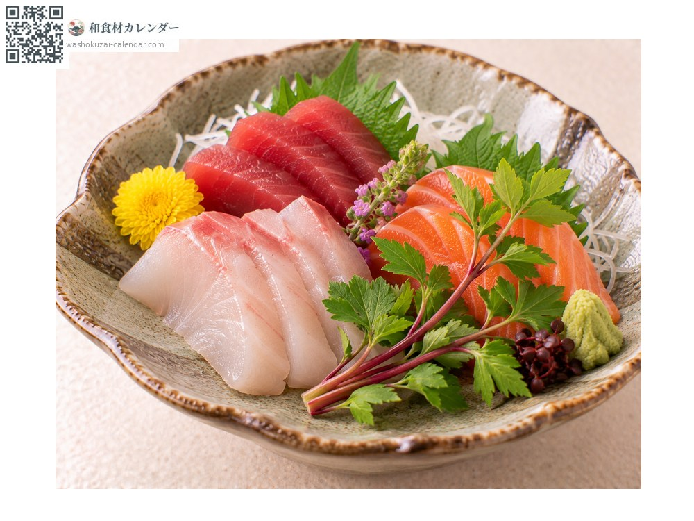
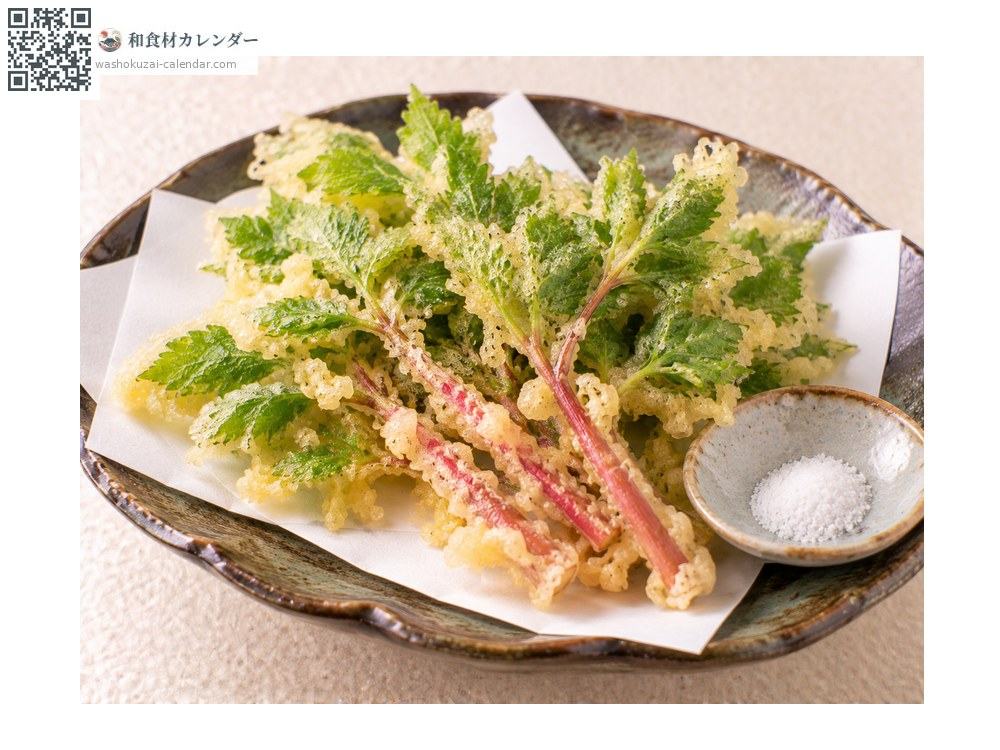
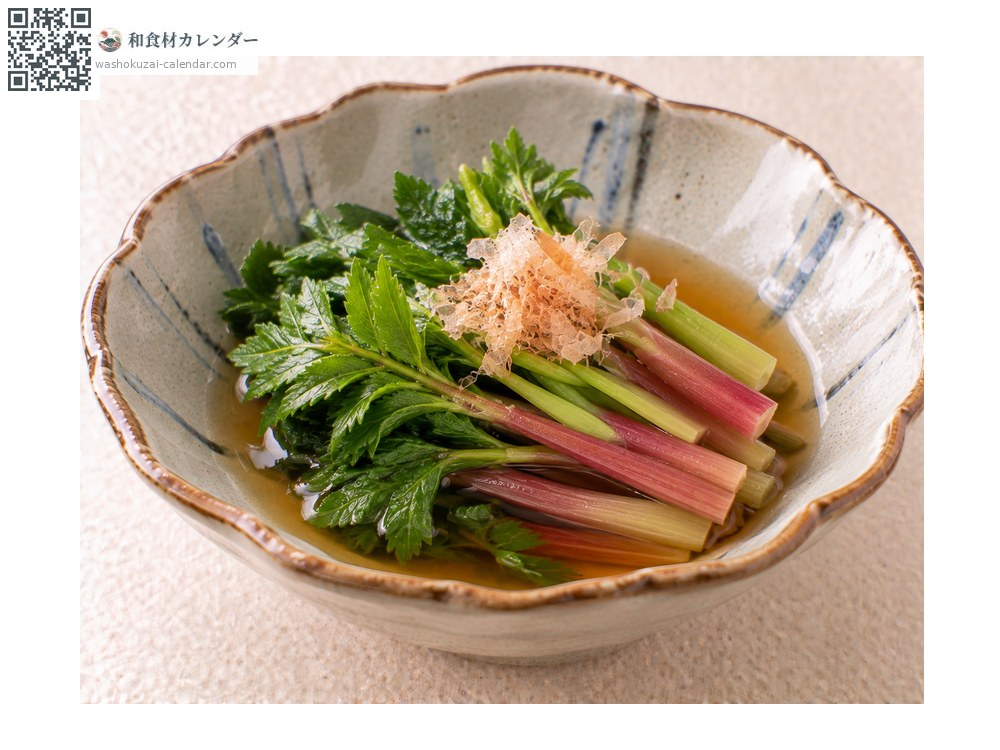
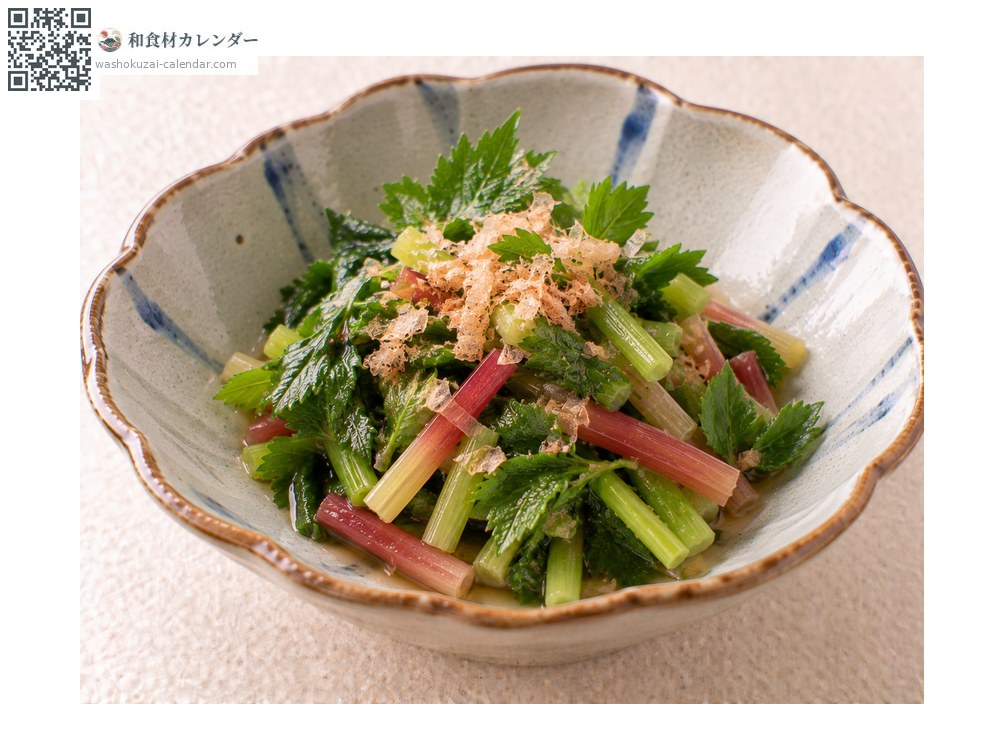

蔬菜
防风（红轴）
防風 ぼうふう bofu
别名bofu、boufuu、isobofu、isoboufuu
尚未登记应季时期

应季时期
1月
2月
3月
4月
5月
6月
7月
8月
9月
10月
11月
12月
应季有供应
烹饪方法

生鱼片配菜
连红轴一起附在生鱼片旁，独特的香气很配鱼。

天妇罗
连茎带叶油炸，香气四溢、色彩也好。

烫青菜
快速焯水后浸在高汤里，香气依然留存。

醋物
切碎凉拌，清爽的香气会更突出。
挑选方法
轴的红色鲜艳、叶子水嫩深绿。没有折断。
保存方法
不耐干燥。用湿纸包好密封冷藏，两到三天内用完。
主要产地
小知识
市面流通的是栽培品矶防风，特征是红色的茎。野生于海岸的滨防风香气更强，被视为生鱼片配菜的上品，但采集量很少。日文名取自「防风邪」之意，自古就被当作药草看待。